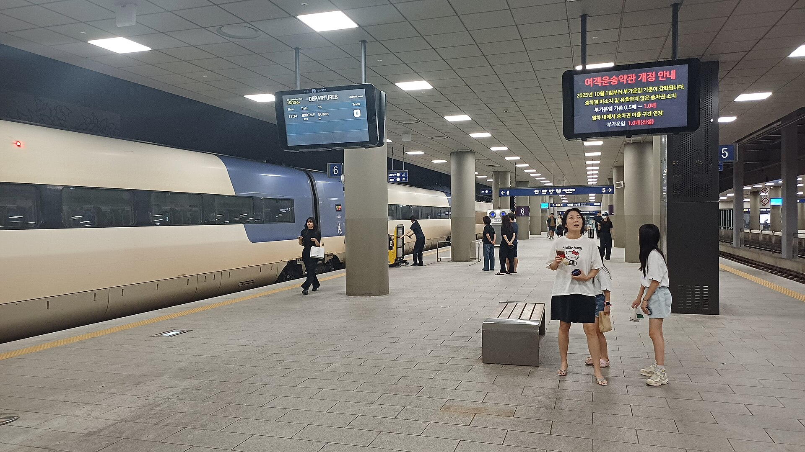
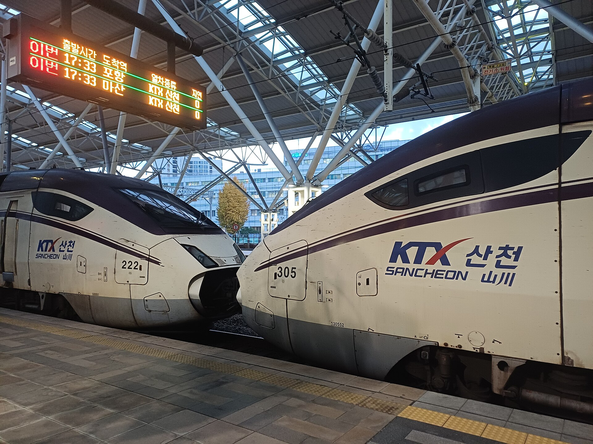
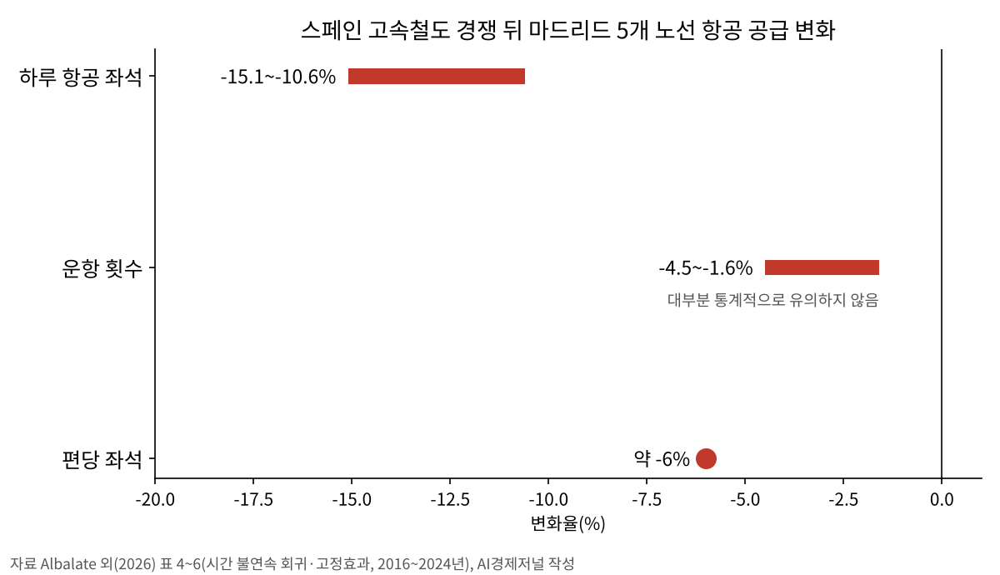
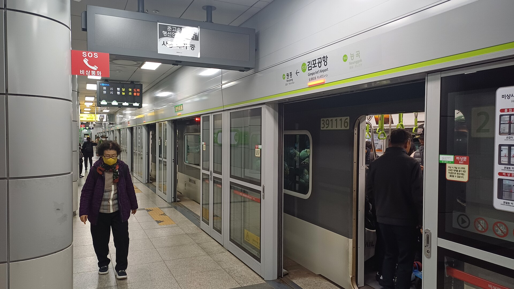
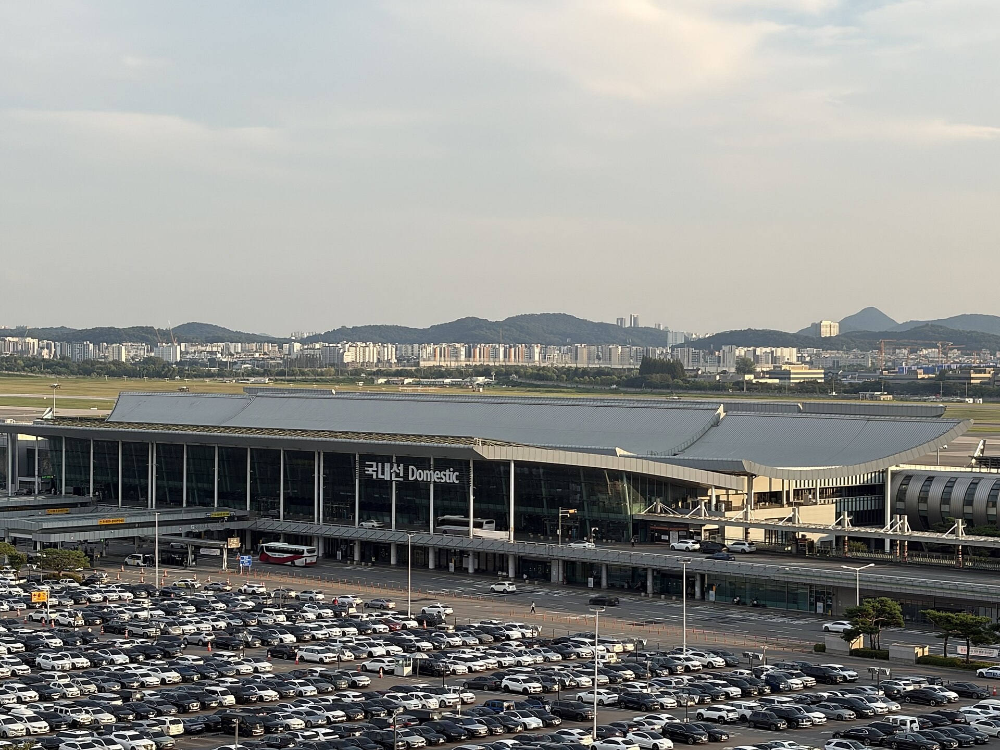
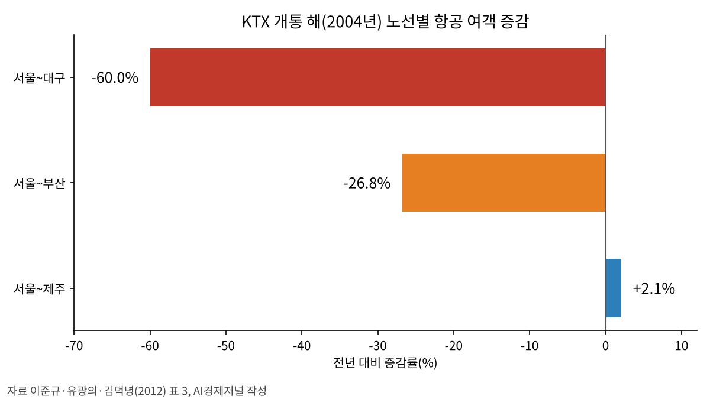
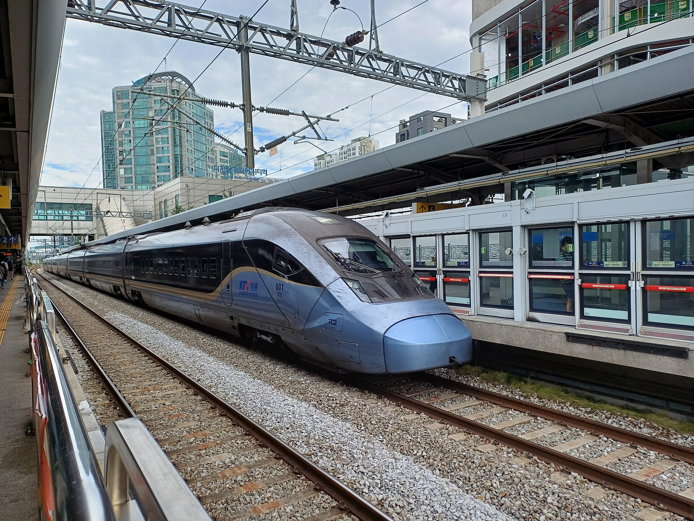
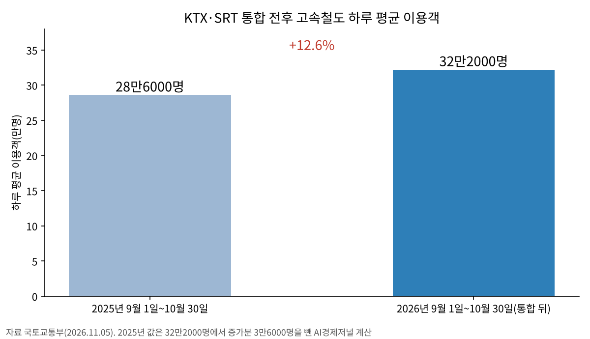

[항공] 스페인 고속철도 경쟁 뒤 항공 좌석 10~16% 감소, 운항 횟수 유지
스페인 항공사, 운항 횟수 대신 비행기 크기 축소
KTX·SRT 통합 두 달, 하루 이용객 32만2000명
AI경제저널=김갑봉 기자 | 스페인 연구진이 고속철도 경쟁과 항공의 관계를 밝혔다. 바르셀로나대 알발라테 교수 등 세 명이다. 고속철도 시장을 새 운영사에 개방한 뒤 마드리드를 잇는 국내선 항공 좌석이 10~16% 줄었다. 운항 횟수는 거의 그대로다.
논문은 국제 학술지 『교통 비즈니스·경영 연구』 2026년 6월호에 실렸다. 한국에서는 지난 9월 고속철도 두 운영사가 하나로 합쳐 좌석을 늘리고 운임을 내렸다.

AI경제저널은 국제 학술지 논문 세 편과 국내 학술지 논문 두 편을 함께 살폈다. 철도와 겨루는 단거리 노선에서 항공 공급이나 수요가 줄거나 승객이 철도로 옮겨 간다는 결과가 잇따랐다. 줄어드는 폭과 조건은 연구마다 달랐다.
스페인 철도 경쟁 뒤 좌석 10~16% 감소

스페인은 유럽연합 지침에 따라 고속철도 운행을 다른 회사에 열었다. 2021년 5월 프랑스 국철의 저가 열차 우이고가 마드리드~바르셀로나에 처음 들어왔다.
국영 렌페의 저가 열차 아블로(2021년 6월)와 이탈리아계 이리요(2022년 11월)가 뒤따랐다.
분석 자료는 마드리드와 다섯 도시를 잇는 노선의 2016~2024년 관측치 1만6044개다. 연구진은 개방 시점을 기준으로 앞뒤를 견줬다. 하루 항공 좌석은 장기적으로 10.6~15.1% 줄었다. 논문 초록은 이를 10~16%로 적었다.
철도 이용자가 얻은 편익도 논문에 정리돼 있다. 연구진은 스페인 경쟁당국 자료를 인용했다. 주요 세 노선의 하루 평균 고속철도 운행은 한 방향 78회에서 115회로 늘었다.
논문이 인용한 유럽연합 집행위원회 보고서(2024)는 고속철도 운임이 20~50% 내렸다고 정리했다. 낮아진 운임과 새 수요로 생긴 소비자 편익은 3억4300만유로라고 스페인 경쟁당국은 추산했다. 2023년 마드리드~바르셀로나 항공·고속철도 시장에서 고속철도 점유율은 82%였다.
운항 횟수 유지, 편당 좌석 6% 안팎 감소

운항 횟수 감소는 1.6~4.5%에 그쳤고 대부분 통계적으로 유의하지 않았다고 연구진은 밝혔다. 대신 한 편에 싣는 좌석이 장기적으로 6% 안팎 줄었다. 항공사는 편수를 지키고 작은 비행기를 띄웠다.
스페인 대형항공사 이베리아항공의 마드리드~바르셀로나 운항편에서 200석급 A321이 줄었다. A321 비중은 2016년 71%에서 2024년 23%로 내려갔다.
이베리아가 편수를 지킨 까닭으로 연구진은 거점인 마드리드 바라하스공항에서 갈아타는 승객을 들었다.
두 도시 사이 수요에 주로 기대던 저비용항공사 부엘링은 이 노선에서 빠졌다. 연구진의 결론은 이렇다. 허브 연결에 기대는 항공사는 버티고, 두 지점만 잇는 항공사는 취약하다.
2015년에도 비슷한 결과가 나왔다. 알발라테·벨·파헤다(2015)는 『교통지리학저널』에서 유럽 4개국 국내 180개 노선을 분석했다. 프랑스·독일·이탈리아·스페인의 2002~2010년(좌석은 2009년까지) 자료다.
네 나라를 함께 보면 항공사는 좌석을 줄였지만 운항 횟수는 크게 줄이지 않았다. 나라별로는 스페인에서 좌석과 운항 횟수가 함께 줄었고, 독일은 좌석만 줄었다. 프랑스·이탈리아는 뚜렷한 변화가 없었다.
열차 1% 빨라지면 항공객 0.55% 감소

독일항공우주센터 외징만·엔넨 연구진은 『교통정책 사례연구』(2025)에 2002~2019년 항공 자료 분석을 실었다. 분석 대상은 독일 13개 도시끼리, 또 이 도시들과 이웃 7개 나라 큰 도시를 잇는 노선을 방향별로 나눈 도시 쌍 188개다.
연구진은 열차 평균 속도가 1% 오르면 항공 승객이 0.55% 줄어든다고 추정했다. 독일 국내 노선만 보면 0.74%다. 국경을 넘는 노선에서는 뚜렷한 효과가 나타나지 않았다.
야간열차가 있으면 항공 수요가 10%에서 30% 넘게 더 줄 수 있고, 국경 노선에서 효과가 더 크다고 연구진은 분석했다. 연구진은 철도망 모양에 따라 효과가 다를 수 있다고 덧붙였다. 독일 철도망은 분산형이고 스페인·프랑스는 중앙집중형이라는 설명이다.
2004년 서울~대구 항공 여객 60% 감소

한국도 2004년 4월 KTX 개통 뒤 항공 수요가 크게 줄었다. 이준규·유광의·김덕녕(2012)은 『한국항공운항학회지』에 실은 서울~제주 고속철도 연구에서 한국공항공사 통계를 정리했다.
그해 서울~대구 항공 여객은 60.0%, 서울~부산은 26.8% 줄었다. 바다를 건너는 서울~제주는 2.1% 늘었다.

임삼진 외(2008)는 『대한교통학회지』에 서울~대구 이용자 조사를 실었다. 저비용항공이 들어온다고 가정하고 2006년 6월에 물었다(유효 응답 200명).
저비용항공 운임이 3만8000원이고 걸리는 시간이 KTX와 같으면 저비용항공을 고를 확률은 10%였다.
통합 고속철도 두 달, 이용객 12.6% 증가

스페인은 고속철도 운영사를 늘렸고, 한국은 두 운영사를 하나로 합쳤다. KTX를 운영하던 한국철도공사와 SRT를 운영하던 에스알은 9월 1일 하나로 합쳐 두 열차를 함께 운행하기 시작했다. 국토교통부는 하루 전인 8월 31일 통합 계획을 알렸다.
국토부는 평일 하루 약 1만5000석, 주말 하루 최대 1만7000석을 더 공급하고 수서역 노선 좌석을 약 30% 늘린다고 밝혔다. KTX 운임은 기존 SRT 수준으로 평균 10% 내렸다.
통합 전인 2025년 국내선 항공교통량은 하루 평균 617대였다. 한 해 전보다 1.6% 줄었다. 국토교통부는 해외여행 수요가 늘면서 국내선이 완만한 조정 국면에 들었다고 설명했다.

9월 1일부터 10월 30일까지 고속철도 이용객은 하루 평균 32만2000명이었다. 지난해 같은 기간보다 12.6% 늘었고, 수서역을 오가는 노선은 29.5% 늘었다.
두 달 동안 운임 할인과 마일리지 등으로 승객에게 돌아간 혜택은 약 515억원이라고 국토부는 밝혔다.
참고문헌
- Albalate, D., Gragera, A., Suau-Sanchez, P. (2026). Fewer seats, resilient frequencies: Impacts of large-scale high-speed rail liberalisation on air transport supply. Research in Transportation Business & Management, 67, 101712. https://doi.org/10.1016/j.rtbm.2026.101712
- Albalate, D., Bel, G., Fageda, X. (2015). Competition and cooperation between high-speed rail and air transportation services in Europe. Journal of Transport Geography, 42, 166-174. https://doi.org/10.1016/j.jtrangeo.2014.07.003
- Oesingmann, K., Ennen, D. (2025). The impacts of high-speed rail expansion on short-haul air passenger transport – Evidence from German domestic and international traffic. Case Studies on Transport Policy, 21, 101549. https://doi.org/10.1016/j.cstp.2025.101549
- 이준규, 유광의, 김덕녕, 「고속철도 개통이 항공여객 수요변화에 미치는 영향 분석 - 서울-제주간 노선을 중심으로 -」, 『한국항공운항학회지』 20(1), 한국항공운항학회, 2012년 3월, 26-33쪽. https://doi.org/10.12985/ksaa.2012.20.1.026
- 임삼진, 임강원, 이영인, 김경희, 「저비용항공 진입에 따른 항공과 고속철도수단 선택에 관한 연구」, 『대한교통학회지』 26(4), 대한교통학회, 2008년 8월, 51-61쪽. https://koreascience.kr/article/JAKO200809651049542.page
- "코레일-에스알 9월 1일 하나로…안전 최우선, 더 편리한 고속철도의 시작", 국토교통부·한국철도공사, 2026.08.31, https://info.korail.com/info/selectBbsNttView.do?bbsNo=199&nttNo=27228
- "고속철도 통합 60일, 하루 32.2만 명 이용 … 예매·객실 서비스 개선 이어간다", 국토교통부 철도정책과, 2026.11.05, https://www.molit.go.kr/USR/NEWS/m_71/dtl.jsp?id=95092559
- "수출·관광에 힘 실린다 '항공교통, 사상 첫 연간 100만 대 돌파'", 국토교통부 항공교통과, 2026.02.19, https://eiec.kdi.re.kr/policy/materialView.do?num=277091
[사진 출처]
- [사진 1] Striker9498 / CC0 / 위키미디어 공용
- [사진 2] 블루라인 / CC BY 3.0 / 위키미디어 공용
- [사진 3] Striker9498 / CC0 / 위키미디어 공용
- [사진 4] Hajoon0102 / CC BY-SA 4.0 / 위키미디어 공용
- [사진 5] 블루라인 / CC BY 3.0 / 위키미디어 공용
※ 이 기사는 AI 프로그램 클로드를 활용해 작성했습니다.
관련기사
저작권자 © AI경제저널 무단전재 및 재배포, AI학습 및 활용 금지